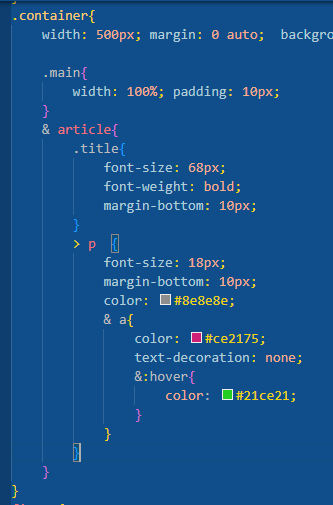
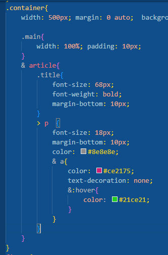

Anidacion css
El nuevo sistema de anidacion css:
es un sistema que nos permite evitar el tener que repetir codigo para buscar una etiqueta
Sin anidación:
con anidacion:
El nuevo sistema de anidacion css:
es un sistema que nos permite evitar el tener que repetir codigo para buscar una etiqueta
Sin anidación:
con anidacion:
